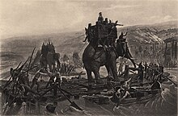
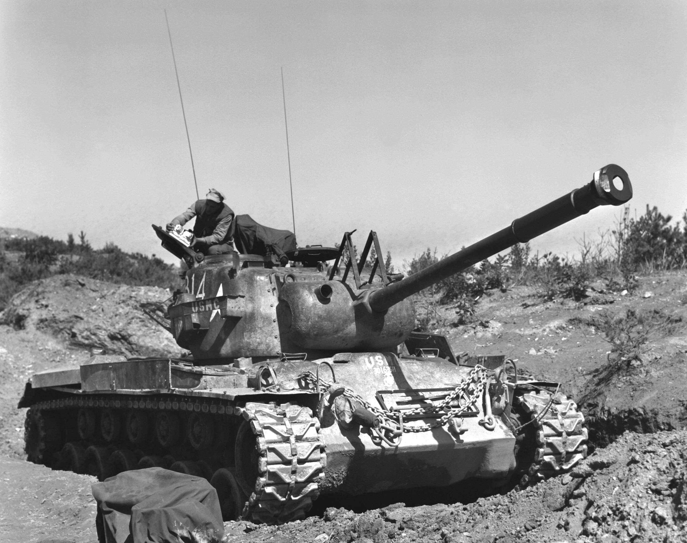
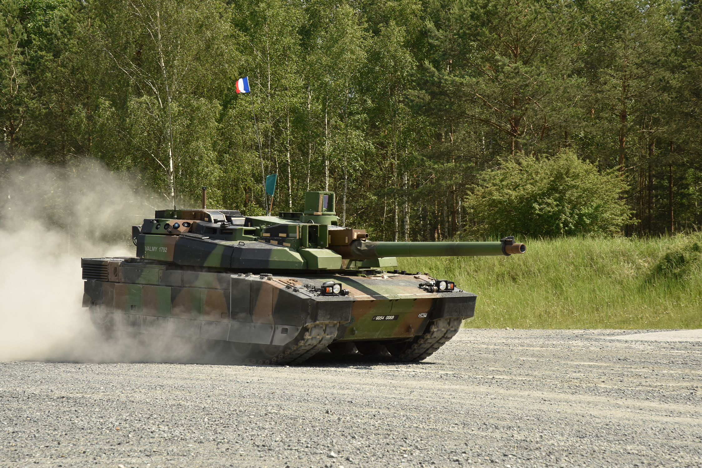

Танк — бойова броньована машина на гусеничному шасі, призначена для наземних бойових дій. Типовий сучасний танк має великокаліберне гарматне озброєння в обертовій башті, однак історично танк міг бути озброєний кулеметом, легкою гарматою або , рідше, вогнеметом.
Слово «танк» походить від англійського слова tank, тобто «бак» чи «цистерна». Походження назви таке: під час відправлення на фронт перших танків британська контррозвідка пустила чутку, що в Англії російським урядом замовлено партію цистерн для питної води. І танки відправилися залізницею під виглядом цистерн (добре, що величезні розміри та форма перших танків цілковито відповідала цій версії). У Франції, де танки винайшли паралельно з Великою Британією, їх одразу почали називати char de combat (букв. «бойова колісниця») для точного засвідчення винайдення цього виду техніки ними також.
Поява танків як мобільних платформ з важким озброєнням була результатом технологічного розвитку у кількох напрямках: створення самохідної техніки, удосконалення озброєння та бронювання. Людство використовувало захищені рухомі конструкції ще з античності, як тарани та облогові вежі. Також приклади мобільної артилерії з’являлися ще в середньовіччі, коли гусити застосовували гармати на возах. Однією з перших спроб створити броньовану машину з озброєнням був проєкт британця Джеймса Коуена 1855 року, але він виявився непрактичним. Під час Громадянської війни в США з'явилися бронепоїзди та броненосці. З розвитком двигуна внутрішнього згоряння наприкінці 19 століття з'явилася можливість створювати більш ефективні наземні бронемашини. На початку 20 століття з’явилися перші гусеничні трактори, а разом з ними почали з’являтися і проєкти гусеничних бронемашин. Однак більшість із цих ранніх розробок, як проєкт танка Менделєєва, так і залишилися прототипами або теоретичними ідеями.
З кінця 1914 року Західний фронт Першої світової війни став ареною позиційної війни. Оборонні укріплення домінували, а піхота при наступі була обмежена колючим дротом та зустрічала артилерійський і кулеметний вогонь. Для вирішення цієї проблеми у Великій Британії та Франції одночасно виникли ідеї створення танків. Протягом війни танки серійно виробляли тільки Велика Британія та Франція. Велика Британія випустила понад 2000 важких танків Mark I, IV, V, а також середні танки Medium A, B і C. Франція спочатку виготовляла невдалі танки Schneider CA1, але з 1918 року перейшла на легкий танк Renault FT, який став першим із обертовою баштою і класичним компонуванням. Перше застосування танків відбулося 15 вересня 1916 року під час битви на Соммі. У листопаді 1917 під Камбре 500 танків прорвали німецьку оборону. Німецька імперія змогла виготовити лише близько 20 ненадійних танків A7V. Перша танкова битва сталася 24 квітня 1918 року між британськими та німецькими машинами. Перші танки були повільними (6-9 км/год) і використовувалися для прориву дротяних загороджень та придушення кулеметних точок. Німці зосередилися на боротьбі з танками, використовуючи рови, міни та польові гармати.
Друга світова війна значно прискорила розвиток танкобудування. За шість років танки отримали протиснарядне бронювання, потужні довгоствольні гармати (до 152 мм) і перші нічні приціли. Радіофікація танків стала обов'язковою, а тактика їх застосування досягла високого рівня, зокрема завдяки німецькому "бліцкригу". Німецькі танки відзначалися міцною бронею і довгими гарматами, радянські — технологічністю та масовим виробництвом (Т-34, КВ, ІС). Найкращими танками війни вважаються німецькі Pz.IV, "Тигр", "Пантера", радянський Т-34 та ІС-2, а також американський M4 Sherman.
ППіслявоєнні танки першого покоління, створені під час Другої світової війни, але не брали участі в боях, включають радянські Т-44, Т-54, ІС-3, американські M26 Pershing, M46 Patton, британський Centurion та інші. Легкі танки стали спеціалізованими машинами (розвідувальні, плаваючі, авіатранспортабельні). З середини 1950-х з'являються основні бойові танки з потужним бронюванням, гарматами більшого калібру та захистом від ЗМУ (радянські Т-55, Т-62, американський M48). Танки другого покоління (60-70-ті рр.) пристосовані до умов ЗМУ, мають покращене бронювання, автомат заряджання та потужні двигуни (Т-64, Т-72, M60, Leopard-1). Третє покоління (70-80-ті рр.) використовує нові технології захисту та досконалу електроніку (Т-80, М1А2 Abrams, Leopard-2).
